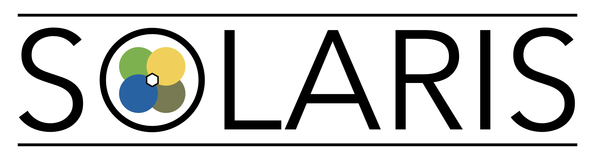
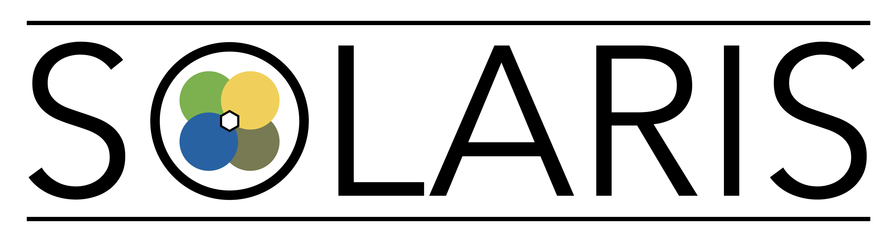

Intructions:
- Use the HELIOSmatics to check the detector and field settings.
- The easiest way to do DWBA and Monte Carlo Simulation is use the Simplied Interface
- The kenimatic calculation is documented in Here.
- The DWBA calucation is using Ptolemy. Here for more detail.
- Past calculations can be found Here. Clear every Monday.
Credits:
This page is created and hosted by Fox's Lab (FSU) in collabortion with SOLARIS (FRIB).
The SOLARIS project is based on HELIOS (ANL) and is leaded by ANL.
The ISS (ISOLDE Solenoidal Spectrometer) is located as CERN.

 
The simulation was started from Ben Kay (ANL) around 2010 using excel spreadsheet.

The simulation was started from Ben Kay (ANL) around 2010 using excel spreadsheet.
Ryan Tang (former ANL postdoc, now at FSU) developed a Monte Carlo simulation with DWBA using CERN ROOT framework.
And the whole simulation migrated to here at Dec, 2022.
Contact: Ryan Tang (rtang at fsu.edu)
any suggestions and feedback are very welcome.
Todo :
- File name of the images of past calculations include reaction
- Change the legend position of the DWBA calcualtion
- A 3-D simulation?